Story
초밥
생선살과 유부, 김, 계란 등 여러 식재료들을 초에 절인
밥위에 올려 만든 일본의 대표적인 전통요리.
초밥의 탄생
한국에서 스시를 "초밥"으로 부르기 시작한 것은 1940년대로 추정된다.
본래 일본말 스시가 그대로 사용되었으나 1940년대 생선을 밥위에
얹어서 먹는다고 하여 생선 초밥이라는 말이 대체용어로 사용되었던 것 같다.
그러다 2000년대 중반부에 들어서는 일본어 용어가 유입이 다시 들어오기도 하고,
초밥의 세계화로 스시가 이 요리의 국제 명칭(영어로 Sushi)
이 되기도 하여 스시 역시 초밥과 함께 한국에서 혼용된다.
보통 초밥이라 많이 이야기하지만,
스시라 이야기해도 사람들은 보통 다들 알아듣는다.
Kind
초밥의 종류
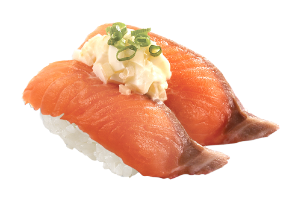
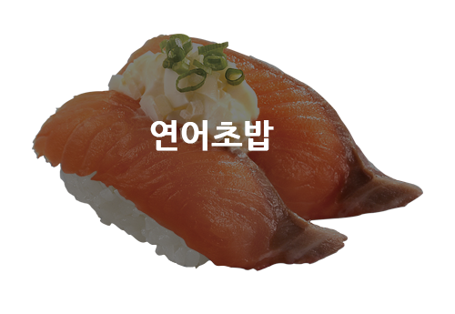
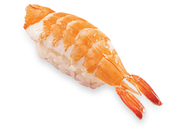
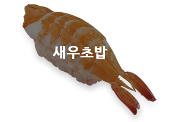
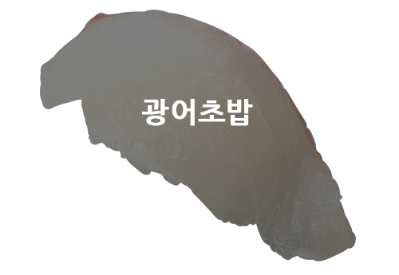
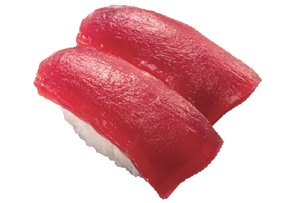
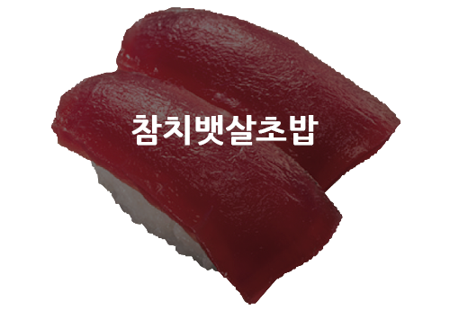
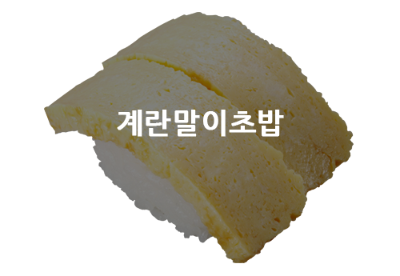
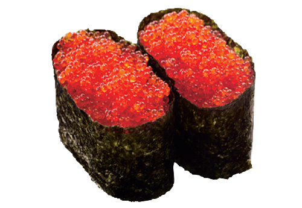
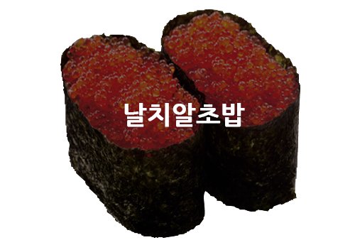
Recommend
초밥 추천
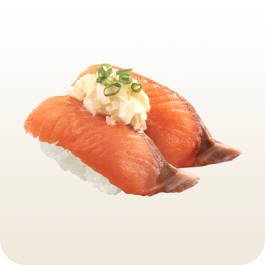
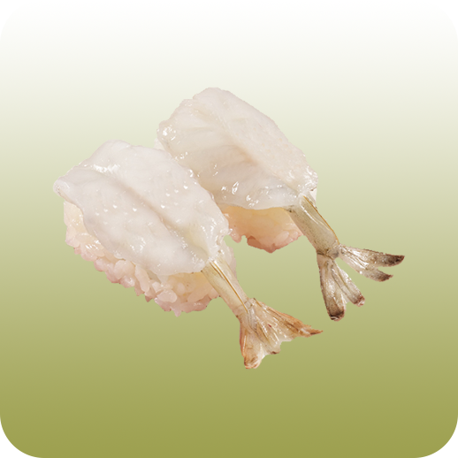
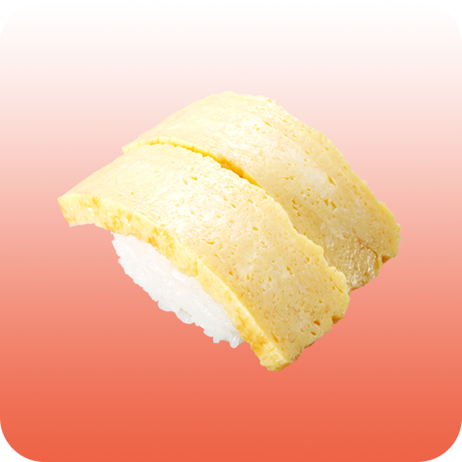
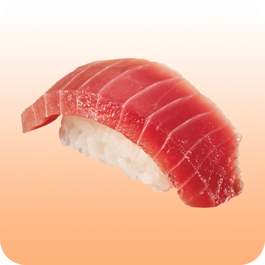
연어초밥
간장새우
계란말이
참다랑어
Restaurant
초밥 맛집
계원예대 초밥 맛집 ' 스시화 '
영업시간은 오전 11:30 ~ 오후 12:00
메뉴가 매우매우 다양하고, 일단 점심특선이
정말 싸다. 맛도 맛있고, 사장님이 친절하셔서
가끔 서비스도 주시곤 한다. 내부도 깔끔해서
초밥 먹고 싶을 땐 자주간다.
그래서 이 초밥 맛집을 추천한다!